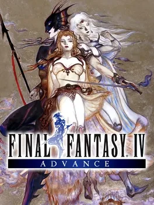

▾Bestiary Checklist
Track all 253 enemies including missables, rare spawns, and boss-only entries across every dungeon, the Underworld, the Moon, and the Lunar Ruins.
Not started
Walkthrough Checklist
Step-by-step walkthrough covering the full main story, all optional quests including Excalibur, Odin, Asura and Leviathan, the Cave of Trials, and the post-game Lunar Ruins.
Not started